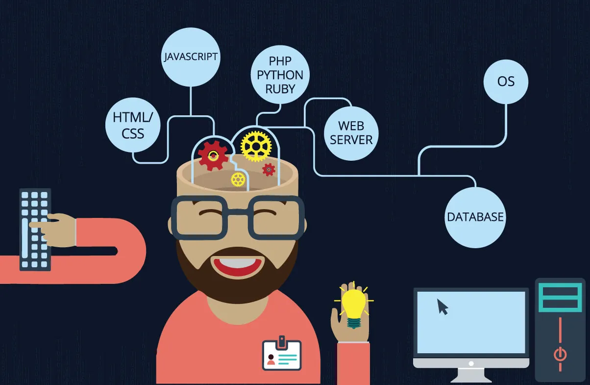

A good full stack developer is like one of those celebrities who can do it all. They can act, sing, be a DJ, host a show, even direct, and produce! They may not have won an Oscar or a Grammy, but they still have the breadth of experience. They are capable of developing full-fledged applications (Web, mobile, or desktop). They understand both the front-end and back-end and know their way around servers, databases, APIs, MVC, and hosting environments among others.
